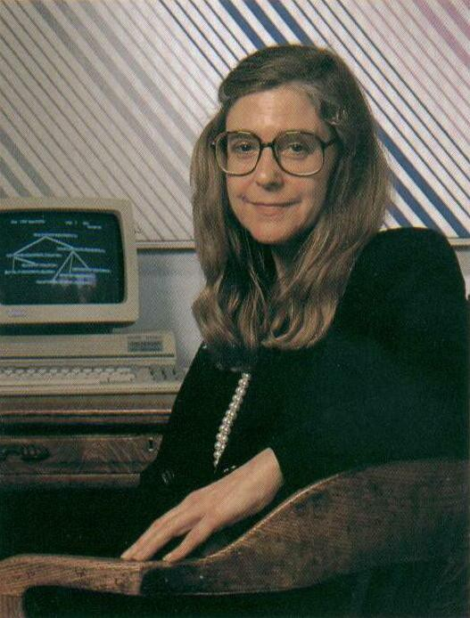

Biography

Margaret Elaine Heafield was born on August 17th1936 in Paoli, Indiana, to Ruth Esther & Kenneth Heafield. In 1959, she started working at MIT in meteorologist Edward Lorenz’s lab. It was the first time she saw a computer, but was quickly engaged in programing computers for weather prediction. What started off as a temporary job soon became her life-long career.
In 1964, Margaret saw a recruitment ad for software developer by MIT. Margaret jumped to the opportunity & joined the MIT Instrumentation Laboratory (now called Charles Stark Draper Laboratory), which worked on the Apollo space mission. She worked on many manned & unmanned missions of NASA’s Apollo program. She had a keen sense of identifying errors & debugging them in a program. Once she discovered an important fix in the code when her 6 yr old daughter was playing in her lab in after hours & mistakenly pressed a button on the simulator that resulted in system failure. It was both an exciting & challenging time of many unknowns. Computer science was an evolving field & scientists were still trying to integrate software with hardware for a seamless interface. She realized that unlike other fields of engineering, the field of software development was not getting the respect it deserved. She thus coined the term ‘Software Engineering’, which is now a part of common parlance.

Margaret left MIT to join the private sector in mid 1970’s. She established two companies, Higher Order Software & Hamilton Technology Inc., & currently is the CEO of the latter. Amongst the many awards, Margaret received the Presidential Medal of Freedom, highest civilian award in the U.S., from President Barack Obama in 2016.